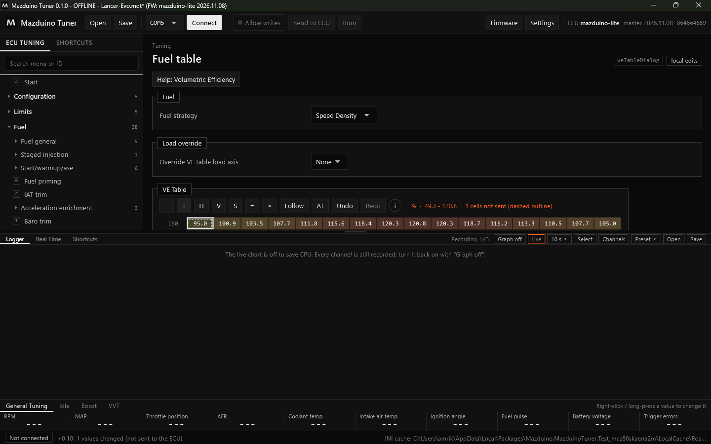
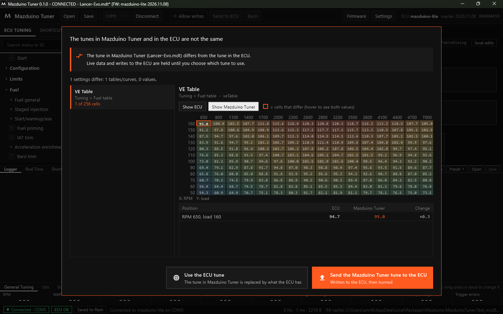
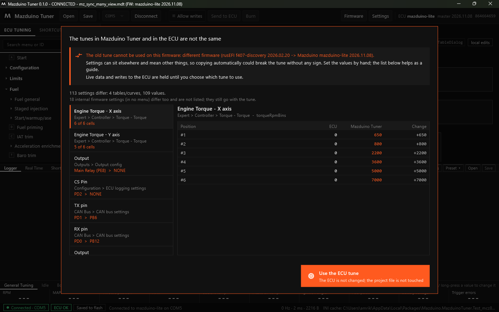
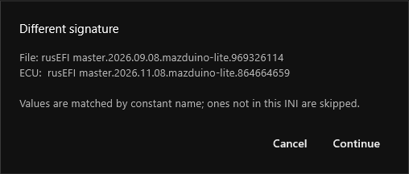
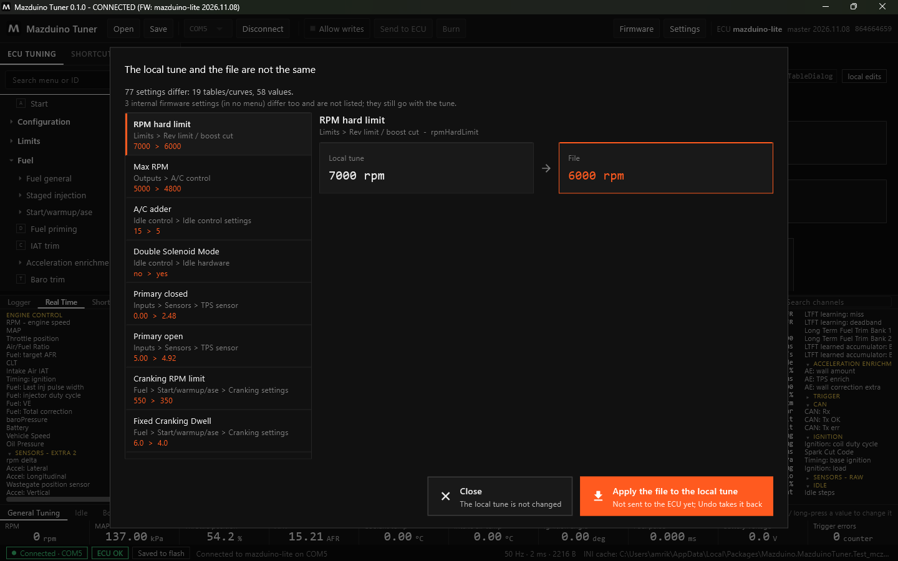
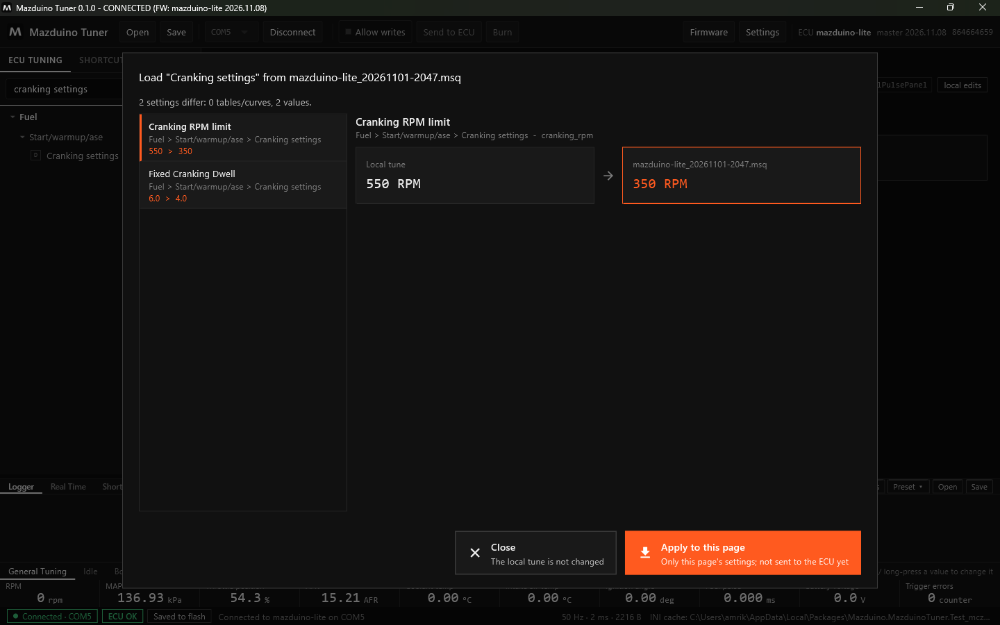

Terakhir diperbarui: 9 November 2026
Proyek dan File Tune di Mazduino Tuner¶
Mazduino Tuner menyimpan tune dalam proyek .mdt. Untuk bertukar tune dengan TunerStudio,
aplikasi juga bisa membuka, menyimpan, dan membandingkan file .msq.
Proyek .mdt¶
File .mdt menyimpan:
- semua nilai tune persis seperti di ECU (tanpa pembulatan)
- signature firmware tempat tune itu dibuat
- definisi firmware (INI), sehingga proyek bisa dibuka di komputer mana pun tanpa internet
Menyimpan Proyek¶
- Klik Save di toolbar (atau Ctrl+S).
- Pertama kali, pilih folder dan nama file, misalnya
Lancer-Evo.mdt. - Berikutnya Save langsung menimpa file yang sama. Shift+klik Save untuk menyimpan sebagai file baru.
Nama proyek tampil di judul jendela. Tanda * berarti ada perubahan yang belum disimpan.
Membuka dan Mengedit Proyek Tanpa ECU¶
Klik Open, pilih file .mdt. Tanpa ECU, proyek terbuka OFFLINE dan semua halaman bisa
dilihat dan diedit seperti biasa:

Jangan lupa Save setelah mengedit.
Tune di Mazduino Tuner Berbeda dengan ECU¶
Saat ECU dihubungkan dan proyek sedang terbuka, aplikasi membandingkan tune proyek dengan tune di ECU. Jika berbeda, muncul dialog berikut. Data live dan penulisan ke ECU ditahan sampai Anda memilih.

Isi dialog:
- Daftar kiri: setiap pengaturan yang berbeda dengan nama dan letaknya di menu, misalnya VE Table — Tuning > Fuel table — 1 of 256 cells.
- Detail kanan:
- Tabel: grid dengan sel yang berbeda diberi kotak oranye. Pilih Show ECU atau Show Mazduino Tuner untuk melihat nilai dari masing-masing sisi. Di bawahnya ada daftar sel yang berbeda: posisi (RPM, beban), nilai ECU, nilai Mazduino Tuner, dan selisihnya.
- Kurva: semua titik dengan baris yang berbeda ditandai.
- Nilai tunggal: nilai ECU dan nilai Mazduino Tuner berdampingan.
- Pilihan:
- Use the ECU tune — tune di Mazduino Tuner diganti dengan isi ECU. Tidak ada yang ditulis ke ECU.
- Send the Mazduino Tuner tune to the ECU — tune proyek ditulis ke ECU lalu di-burn.
Pengaturan internal firmware yang tidak ada di menu (misalnya tanggal build firmware) tidak ditampilkan di daftar, hanya disebut jumlahnya. Jika hanya itu yang berbeda, dialog tidak muncul.
Proyek dari Firmware Lain¶
Setiap update firmware rusEFI bisa memindahkan posisi pengaturan di memori ECU. Jika tune lama disalin mentah ke firmware baru, nilainya bisa masuk ke pengaturan yang salah tanpa terlihat. Karena itu Mazduino Tuner memindahkan tune berdasarkan nama pengaturan, dan hanya jika aman:
| Proyek dibuat dengan | ECU memakai | Yang terjadi |
|---|---|---|
| Firmware sama | Firmware sama | Dibandingkan langsung |
| Mazduino, board sama, tanggal lain (misalnya mazduino-lite 2026-08-17) | Mazduino, board sama (misalnya mazduino-lite 2026-11-08) | Dibandingkan dan dikirim berdasarkan nama; aman walau posisinya bergeser |
| Board lain, epicEFI, rusEFI official, atau firmware lain | Firmware Mazduino | Peringatan: tune lama tidak bisa dipakai, samakan secara manual |
Untuk firmware yang berbeda, daftar perbedaan tetap ditampilkan sebagai panduan untuk menyamakan nilai secara manual, tetapi hanya ada pilihan Use the ECU tune. File proyeknya tidak diubah.

Banyak Mazduino Lite memakai firmware rusEFI f407-discovery
ECU Mazduino Lite yang sebelumnya memakai firmware rusEFI f407-discovery termasuk "firmware
lain" saat dipindah ke firmware Mazduino mazduino-lite. Simpan tune lama sebagai .msq,
lalu samakan pengaturan secara manual dengan bantuan Compare.
File TunerStudio (.msq)¶
Buka Settings, bagian TunerStudio tune file (.msq):
| Tombol | Fungsi |
|---|---|
| Import | Memuat file .msq ke tune lokal. Belum dikirim ke ECU; bisa dibatalkan dengan Undo. |
| Export | Menyimpan tune lokal sebagai .msq (termasuk perubahan yang belum dikirim) |
| Compare | Membandingkan tune lokal dengan file .msq |
Nilai dicocokkan berdasarkan nama pengaturan. Jika signature file berbeda tetapi masih firmware Mazduino dengan board yang sama, aplikasi meminta konfirmasi dulu:

Hasil Compare memakai tampilan yang sama dengan dialog di atas:

- Close — tune lokal tidak diubah.
- Apply the file to the local tune — nilai dari file diterapkan ke tune lokal. Belum dikirim ke ECU; kirim dengan Send to ECU dan simpan dengan Burn.
Untuk file dari firmware lain, Import ditolak dengan peringatan, sedangkan Compare tetap bisa dipakai sebagai panduan (tanpa tombol Apply).
Memuat Satu Halaman dari File¶
Untuk mengambil pengaturan satu halaman saja dari tune lain (misalnya cranking dari tune mobil
lain), klik kanan halaman itu di menu, lalu pilih Load this page from another file... dan pilih
file .mdt atau .msq.

- Hanya pengaturan di halaman itu yang dibandingkan, dengan tampilan yang sama seperti di atas.
- Apply to this page menerapkan nilai dari file ke tune lokal. Belum dikirim ke ECU: kirim dengan Send to ECU dan simpan dengan Burn, atau batalkan dengan Ctrl+Z.
- Aturan firmware yang sama berlaku: file dari firmware lain hanya ditampilkan sebagai panduan.